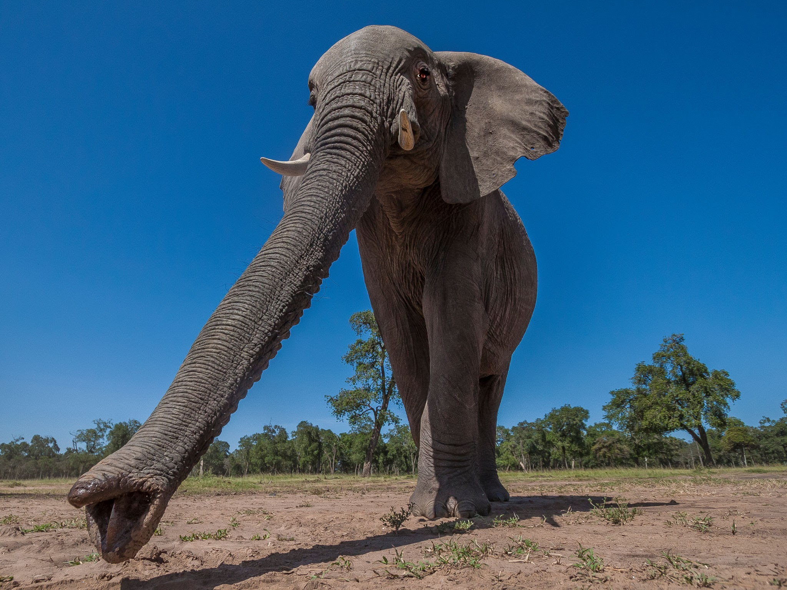
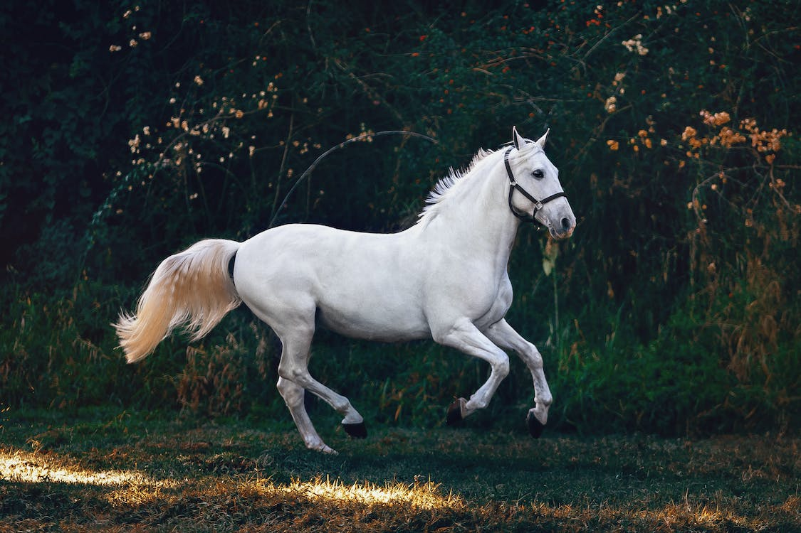

Elephants
Elephants are the largest existing land animals. Three living species are currently recognised: the African bush elephant, the African forest elephant, and the Asian elephant. They are the only surviving members of the family Elephantidae and the order Proboscidea.
Black panther

A black panther is the melanistic colour variant of the leopard and the jaguar. Black panthers of both species have excess black pigments, but their typical rosettes are also present.
The horse
The horse is a domesticated, one-toed, hoofed mammal. It belongs to the taxonomic family Equidae and is one of two extant subspecies of Equus ferus. The horse has evolved over the past 45 to 55 million years from a small multi-toed creature, Eohippus, into the large, single-toed animal of today.